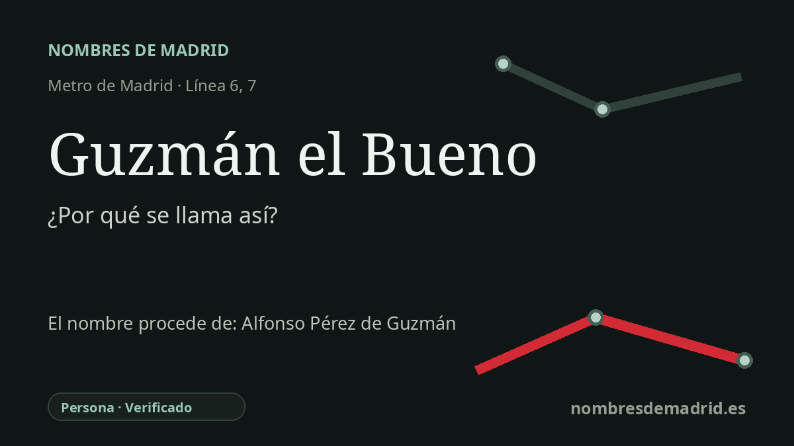

Publicado el · Investigación de Nombres de Madrid · Cómo verificamos cada origen · 8 fuentes consultadas
Respuesta rápida
La estación de Guzmán el Bueno toma su nombre de la calle madrileña cercana dedicada a Alonso Pérez de Guzmán, alcaide medieval de Tarifa. Su fama procede de la defensa de Tarifa en 1294, recordada después mediante el relato dramático del sacrificio de su hijo cautivo antes que entregar la plaza.
La historia del nombre
La estación de Guzmán el Bueno se entiende mejor como un nombre de Metro heredado del callejero madrileño. La estación está junto a la avenida de la Reina Victoria y cerca de la calle de Guzmán el Bueno, una vía que la tradición municipal identifica con el noble medieval Alonso Pérez de Guzmán, conocido como Guzmán el Bueno.
Alonso Pérez de Guzmán vivio entre 1256 y 1309. La Real Academia de la Historia lo presenta como señor de Sanlúcar, alcaide de Tarifa y fundador de la casa de Niebla, situado en el mundo fronterizo de la Castilla de finales del siglo XIII, los benimerines, Granada y la lucha por el control del estrecho de Gibraltar.
El episodio que hizo celebre su nombre ocurrió en Tarifa en 1294. Sancho IV le había confiado la defensa de la plaza, y el hermano del rey, el infante don Juan, la atacó con aliados musulmanes. La tradición medieval cuenta que los sitiadores tenían cautivo a uno de los hijos de Guzmán y amenazaron con matarlo si no entregaba la fortaleza; Guzmán se negó, anteponiendo su deber hacia el rey y la villa a su propia familia.
Crónicas posteriores, romances, pinturas, obras teatrales y monumentos públicos hicieron la escena aún más dramática: Guzmán arroja desde la muralla su propio cuchillo para que se cumpla la amenaza. Esa imagen explica que su nombre se convirtiera en símbolo de lealtad extrema y que lo conserven tantas calles, unidades militares y monumentos españoles.
Para la estación de Metro, el dato firme es la cadena del nombre: primero la calle y después la estación. La estación abrió con la prolongación Cuatro Caminos-Ciudad Universitaria de la línea 6 el 13 de enero de 1987; la línea 7 llegó a Guzmán el Bueno el 12 de febrero de 1999. La persona y la tradición de Tarifa están bien documentadas, pero la fecha exacta del acuerdo municipal que dio nombre a la calle madrileña sigue sin resolverse, y los detalles más dramáticos deben presentarse como tradición, no como hecho documental simple.